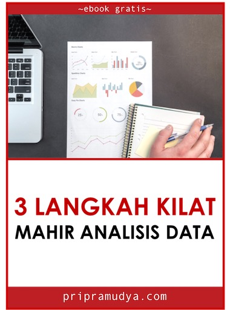

3 LANGKAH KILAT MAHIR ANALISIS DATA
2019-01-14
Pendahuluan
Selamat Datang

Terima kasih sudah bersedia menyempatkan sedikit waktu untuk mengunjungi website dan membaca buku ini.
Berikut materi yang akan Anda dapatkan:
- Kenapa Anda perlu menguasai keterampilan analisis data
- Konsep dasar analisis data yang tidak diketahui banyak orang
- Satu tool pengolah data powerful yang perlu Anda kuasai
- Teknik dasar analisis data yang perlu Anda pelajari
- Panduan praktis dan rinci cara menganalisis data dari nol sama sekali
Versi pdf buku elektronik pendek 3 Langkah Kilat Mahir Analisis Data bisa diunduh dengan mendaftarkan email Anda terlebih dulu di https://pripramudya.com.
Buku dan website ini tersedia secara bebas, di bawah Lisensi CC BY 4.0.
Anda diperbolehkan:
Berbagi — menyalin dan menyebarluaskan kembali materi ini dalam bentuk atau format apapun;
Adaptasi — menggubah, mengubah, dan membuat turunan dari materi ini untuk kepentingan apapun, termasuk kepentingan komersial.
Dengan mencantumkan sumber tautan asli dari konten terkait.
Kenapa Anda Perlu Menguasai Keterampilan Analisis Data
Data ada di mana-mana.
Hampir setiap hari Anda berhadapan dengan data, apapun profesi Anda.
Apalagi di zaman now, data berkembang begitu pesat dalam hal jumlah (volume), variasi (variety), dan kecepatan (velocity).
Ya, sekarang kita berada di era big data.
Begitu melimpah ruahnya, sehingga tidak banyak orang yang memiliki keterampilan mumpuni untuk mengambil insight (wawasan baru) dari banyaknya data tersebut.
Tidak perlu jauh mencari sumber data dari luar, data yang tersedia di dalam bidang keprofesian Anda pun sepertinya masih belum dapat digali dengan optimal.
Di tempat kerja saya, pegawai yang menguasai keterampilan analisis data memiliki peluang lebih baik dalam menanjak karir. Apalagi jika hasil analisis data ini digunakan sebagai bahan presentasi oleh kepala divisi. Karirnya meroket.
Ini salah satu contoh nyata. Manajemen begitu membutuhkan insight yang dapat memberikan suatu perubahan lebih baik dalam mengelola roda aktivitas perusahaan sehingga berujung pada peningkatan profitabilitas perusahaan. Manajemen tingkat atas pasti tidak akan ragu memberikan promosi bagi pegawai yang memberikan insight tersebut. Peluang (opportunity) penanjakan karir pegawai yang memiliki keterampilan analisis yang mumpuni lebih baik dari pegawai yang memiliki keterampilan ala kadarnya saja.
Saya akan meringkas bab ini cukup dengan dua kata saja:
INSIGHT & OPPORTUNITY
Ingin mendapatkan insight yang dapat menjawab permasalahan di bidang keprofesian Anda dan membuka opportunity karir terbaik Anda?
Kuasai keterampilan analisis data.
Konsep Dasar Analisis Data
“Saya sudah tahu apa itu analisis data, tidak perlu dijelaskan lagi.”
Mungkin hal tersebut yang ada di benak Anda ketika membaca judul di bab ini.
Memang, membaca teori tidaklah begitu menarik. Anda ingin langsung meloncat ke bab langkah kilat.
Silakan saja. Gunakan menu di daftar isi lalu klik ke bab yang ingin Anda baca.
Namun, tetap saya sarankan untuk membaca bab ini sampai akhir.
Anda perlu tahu konsep dasar analisis data agar memudahkan Anda agar bisa cepat menguasai keterampilan ini.
Apa itu Analisis Data
Jadi, apa sebenarnya analisis data itu?
Analisis data adalah proses mengetahui, memahami, memilah, memecah, merinci, mengurai data dengan berbagai cara atau teknik tertentu seperti manipulasi, visualisasi, pengelompokkan, perbandingan, atau teknik lainnya sehingga didapatkan informasi berguna yang dapat menjawab permasalahan serta membantu dalam pengambilan keputusan.
Ya, tujuan dari analisis data adalah pengambilan keputusan yang lebih baik. Keputusan yang didasarkan pada informasi hasil analisis data bukan berdasarkan naluri semata. Keputusan luar biasa krusialnya yang bisa saja membuat sebuah perusahaan sebelumnya berkibar berujung menjadi gulung tikar ataupun sebaliknya.
Ini membuat analisis data menjadi salah satu keterampilan yang sangat penting penerapannya di hampir seluruh bidang.
Beberapa contoh penerapan dalam bidang bisnis sebagai berikut:
Perkenalan produk kopi terbaru Starbucks
Starbucks memperkenalkan produk kopi terbaru dengan memperhatikan apakah pelanggan menyukai produk baru tersebut. Pada pagi hari produk tersebut mulai dijual, Starbucks memantau berbagai blog, Twitter, forum diskusi dan grup tentang kopi untuk mengetahui bagaimana reaksi pelanggan. Siang harinya, Starbucks menemukan bahwa walaupun pelanggan menyukai rasa kopinya, namun mereka berpikir harganya terlalu mahal. Starbucks langsung menurunkan harga. Pada sore harinya, semua persepsi negatif terkait produk kopi baru tersebut hilang.
Pendekatan dengan respons cepat seperti ini tentu lebih baik dibandingkan pendekatan tradisional dengan menunggu laporan penjualan harian masuk lebih dulu yang pada akhirnya ditemukan bahwa penjualannya mengecewakan. Langkah jadul berikutnya mencari tahu alasan kenapa penjualan mengecewakan dengan melakukan diskusi grup terpusat (focus group discussion). Selanjutnya, beberapa minggu kemudian Starbucks baru menemukan bahwa harganya terlalu mahal lalu menurunkan harganya.
Sistem rekomendasi Amazon
Amazon menggunakan data penjualan, data produk yang sering dilihat, dan perilaku serta preferensi pelanggan lainnya untuk membuat sebuah sistem rekomendasi. Sistem ini membantu Amazon meningkatkan 29% penjualannya. Jika Anda mengunjungi situs Amazon, di bagian bawah Anda akan melihat beberapa produk rekomendasi, produk yang Anda lihat sebelumnya, sampai dengan produk terlaris serta tawaran produk menarik lainnya.
Efisiensi Chevron dalam aktivitas pengeboran
Biaya setiap pengeboran di selat Meksiko diperkirakan sampai dengan $100 juta. Rugi sekali jika hasil pengeboran tersebut tidak didapat sumber minyak bumi. Untuk meningkatkan peluang keberhasilan menemukan sumber minyak, Chevron menganalisis 50 terabyte data seismik. Dengan dukungan kecanggihan komputer, kapasitas penyimpanan, serta tim analis yang mumpuni berhasil meningkatkan keberhasilan menemukan sumber minyak dari yang sebelumnya 1 dari 5 pengeboran menjadi 1 berbanding 3.
Proses dan Tahapan Analisis Data
Untuk menghasilkan informasi dan insight yang dapat memberikan keputusan lebih baik, Anda harus tahu proses dan tahapan dari analisis data. Tahapan analisis data terdiri dari 6 tahapan.
- Menentukan Tujuan
- Menentukan Metode Pengukuran yang Digunakan
- Pengumpulan Data
- Pembersihan dan Pembentukan Data
- Analisis Data
- Interpretasi dan Komunikasi Hasil Analisis Data
1. Menentukan Tujuan
Ini adalah tahap pertama dari proses analisis data. Di bidang keprofesian Anda, Anda harus menentukan tujuan dari permasalahan yang akan diselesaikan dimulai dengan pertanyaan yang tepat. Tahap ini cukup vital mengingat pertanyaan yang salah akan menghasilkan informasi atau insight yang tidak tepat pula.
“Kenapa total penjualan bulan ini turun dibandingkan bulan lalu?”
“Kenapa 7 dari 10 proyek yang sedang berjalan saat ini terlambat?”
“Bagaimana cara mencegah pelanggan kita pindah ke kompetitor?”
Itu adalah contoh permasalahan yang akan disolusikan.
Dengan menentukan pertanyaan yang tepat, Anda bisa lebih fokus dalam mencapai tujuan serta lebih efektif untuk menyelesaikan permasalahan yang ada.
Sumber data yang akan digunakan nantinya juga tergantung dari penentuan tujuan dan pertanyaan tepat dari tahap ini.
2. Menentukan Metode Pengukuran yang Digunakan
Anda sudah meneentukan tujuan di tahap pertama, selanjutnya adalah apa yang perlu dijadikan tolak ukur dan bagaimana cara Anda mengukurnya.
Misalnya Anda mengambil contoh:
“Kenapa total penjualan bulan ini turun dibandingkan bulan lalu?”
Dari permasalahan ini, Anda bisa tentukan bahwa yang harus diukur adalah penjualan. Lalu, Anda tentukan lagi metrik dari penjualan, jumlah barang atau jumlah uang atau keduanya.
- Metrik jumlah barang: buah, lusin, kodi, dus, porsi, dan lainnya.
- Metrik jumlah uang: ratusan ribu rupiah, jutaan rupiah, ribuan dollar, dan lainnya.
Pengukuran juga bisa dibandingkan berdasarkan periodenya. Terhadap bulan sebelumnya atau terhadap tahun sebelumnya di bulan yang sama.
Selain itu, Anda pikirkan juga kira-kira faktor penyebab permasalahan yang bisa dijadikan sebagai tambahan pengukuran. Contoh di bidang penjualan, faktor seperti jumlah pembeli, promosi, diskon, lokasi, harga, bisa dimasukkan sebagai tambahan metode pengukuran.
Pastikan pengukuran ini dilakukan secara tepat karena nantinya akan berpengaruh terhadap kualitas hasil analisis dan pengambilan keputusan.
3. Pengumpulan Data
Anda sudah menentukan tujuan dan juga metode pengukuran di tahapan sebelumnya. Selanjutnya adalah mencari dan mengumpulkan data yang relevan. Sumber data bisa dari mana saja. Internet, basis data internal, survey, wawancara, dan lainnya.
Contoh permasalahan penjualan di tahapan sebelumnya. Data penjualan, promosi, jumlah pelanggan, bisa didapat dari internal. Untuk survey kepuasan pelanggan bisa dilakukan dengan metode pengisian kuesioner ataupun dengan wawancara langsung.
Yang perlu diingat adalah Anda harus mengumpulkan berbagai macam data tersebut secara terstruktur sehingga bisa langsung dapat diolah.
4. Pembersihan dan Pembentukan Data
Dari seluruh tahapan proses analisis data, tahap ini adalah tahap yang paling banyak menyita waktu Anda. Ketika Anda membuka data yang Anda kumpulkan di tahap 3, Anda menemukan struktur data yang tidak siap olah. Berantakan. Duplikasi, salah ketik, karakter spesial, huruf kapital-kecil, data kosong atau NA, format tanggal/waktu tidak sama, dan lainnya merupakan beberapa hal yang sering ditemui pada sebuah basis data.
Untuk mempermudah pembersihan dan pembentukan data ini Anda bisa menggunakan tools sejuta umat, Microsoft Excel. Anda juga bisa menggunakan software pengolah data lain yang Anda kuasai, misalnya SPSS, SAS, STATA, Python, R atau lainnya.
Jangan terlalu menganggap remeh tahapan ini. Buat dan bentuk data sebaik mungkin sehingga data bisa langsung dianalisis. Jika data tidak bersih, semahir apapun Anda dalam menganalisis data, hasilnya tidak akan optimal. Ingat, jika masukannya sampah, keluarannya juga sampah.
5. Analisis Data
Setelah data dibersihkan dan dibentuk, tahapan penting berikutnya adalah tahap analisis data. Tujuan dari tahapan ini adalah untuk mengerti lebih dalam tentang data beserta variabel-variabelnya. Ada beberapa teknik dasar analisis data yang dapat Anda gunakan.
- Teknik Eksplorasi
- Teknik Visualisasi
Teknik Eksplorasi
Sesuai dengan namanya, teknik menjelajah untuk mengerti tentang data. Anda memulainya dengan mencari tahu berapa jumlah baris dan kolom dari basis data, lalu melihat jenis variabelnya: karakter, numerik, atau kategorikal. Dilanjut dengan meringkas data tersebut sehingga dapat menampilkan informasi penting seperti variabel atau kategori dengan frekuensi terbanyak, nilai tertinggi, rerata, dan informasi lainnya.
Intinya Anda menggunakan fungsi-fungsi dari tools analisis untuk mengerti tentang data. Terkadang Anda perlu kembali melakukan proses di tahapan sebelumnya, yakni pembersihan data lalu balik lagi ke tahap ini. Ya, tahap 4 dan 5 merupakan proses yang iteratif. Hal ini dilakukan agar Anda bisa lebih cepat mengerti tentang informasi yang tersimpan dalam data.
Teknik Visualisasi
“Sebuah gambar bernilai ribuan kata.”
Salah satu pepatah bahasa inggris ini benar adanya. Anda lebih cepat mengerti data dengan mereprentasikannya dalam bentuk grafik seperti diagram batang, diagram garis, diagram tebar, histogram, serta info grafik lainnya. Teknik visualisasi merupakan teknik termudah, tercepat, dan terefektif dalam menampilkan informasi tentang data.
Selain itu, hasil dari teknik visualisasi ini bisa digunakan sebagai alat bantu dalam mengkomunikasikan informasi dan insight.
Jika ada satu teknik analisis data yang saya rekomendasikan untuk dikuasai pertama kali, maka teknik visualisasi inilah yang perlu Anda pelajari secepatnya.
6. Interpretasi dan Komunikasi Hasil Analisis Data
Hasil analisis yang sudah Anda selesaikan harus diinterpretasikan. Maksud dari interpretasi ini adalah mengubah hasil analisis yang masih dalam bentuk teknikal menjadi temuan, informasi, ataupun insight yang bisa dimengerti oleh orang awam sekalipun.
Selanjutnya, apakah hasil interpretasi ini sudah menjawab pertanyaan permasalahan di proses tahap 1.
Buat kesimpulan, akan lebih baik lagi jika disertai rekomendasi dan langkah-langkah yang diperlukan untuk menyelesaikan permasalahan yang ada.
Sebaik apapun Anda dalam menganalisis data itu semua akan percuma jika Anda tidak mengkomunikasikan rekomendasi, informasi, dan insight ke atasan, manajemen, klien, pelanggan, masyarakat, ataupun stakeholder Anda. Bukan berarti teknik analisis data tidak penting sama sekali, namun dengan interpretasi dan mengkomunikasikan hasil analisis maka dampak efektivitas dalam mensolusikan permasalahan akan lebih terasa.
Media dalam mengkomunikasikan pun terdapat banyak alternatif. Anda bisa membuat hasil analisis data dalam bentuk infografik (file gambar), tulisan dalam format pdf, slide presentasi, spreadsheet, dahsboard, sampai dengan artikel di blog.
Dengan mengkomunikasikan hasil analisis data, maka pintu opportunites terbuka lebih lebar, mengundang karir terbaik Anda.
3 Langkah Kilat Mahir Analisis Data
Anda sudah mengetahui tentang konsep dasar data analisis yang menjadi landasan dan pondasi Anda dalam mempelajari keterampilan analisis data pada bab sebelumnya. Konsep tersebut merupakan hal yang penting agar Anda dapat cepat mahir dan menguasai keterampilan analisis data.
Di bab selanjutnya akan dibahas bagaimana mempelajari dan mengaplikasikan teknik analisis data. Anda akan dipandu secara rinci bagaimana agar Anda dapat dengan cepat menguasai keterampilan analisis data dengan 3 langkah kilat berikut.